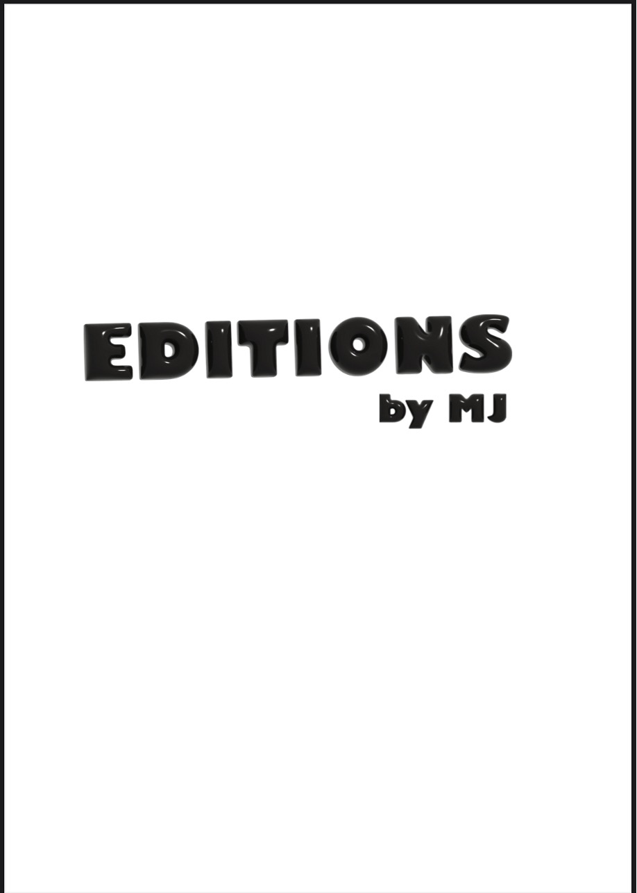
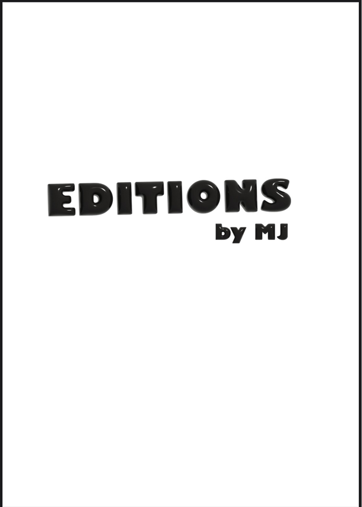

Born and raised in Mexico, Michelle Jaramillo brings a unique cultural lens to her work. As an
immigrant, adapting to a new environment has shaped the way she sees and interacts with the
world—something that comes through in her art. From an early age, she was drawn to creative
expression in all its forms—painting, glass fusing, photography, graphic design, and beyond. But
throughout her journey, one passion has always remained at the center for her, fashion.
Michelle’s designs are inspired by the world around her, surroundings, the richness of color, raw
emotion, and the feel of texture. All play a role in shaping her creative vision. She sees fashion
not only as a form of art but as a powerful medium to tell stories, evoke feelings, and make
whoever wears her pieces feel special.
Now on the path to graduation, Michelle is focused on building her clothing brand, where she
merges her love for design with her personal experiences and artistic background. Through each
piece, she aims to bring life to her inspirations and share a part of her world with others.
During the process of creating this collection Poetic, I was inspired by the Romanticism era and
wanted to blend that feeling with the reality of modern life. My goal was to design looks that can
be worn all day—easy, comfortable pieces that still feel romantic and elegant.
I designed pieces that have a couture feel, but with touches of streetwear that make them
versatile. The silhouettes are based on classic styles, but each one has its own unique twist, from
appliqués to embroidered fabrics. I wanted the clothes to feel light, organic, and full of emotion.